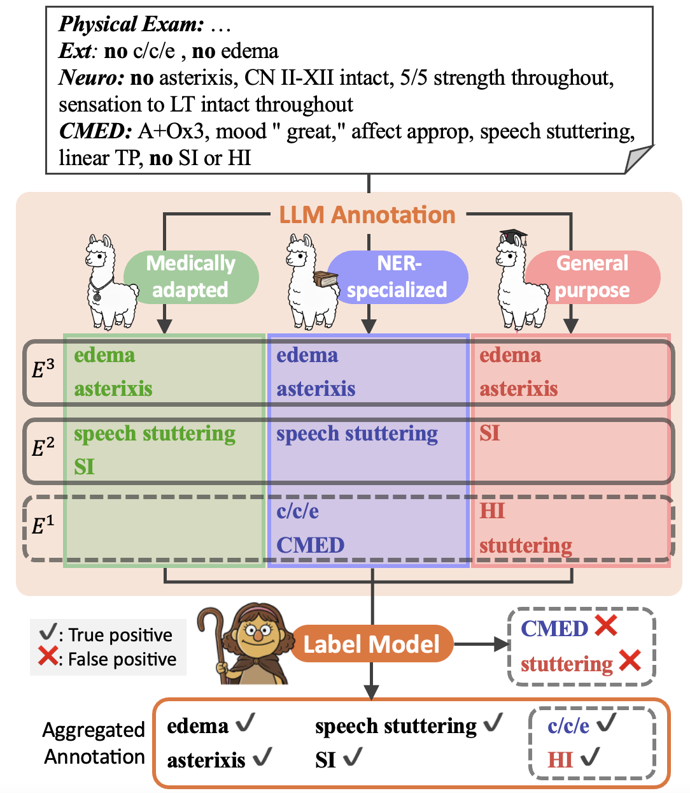
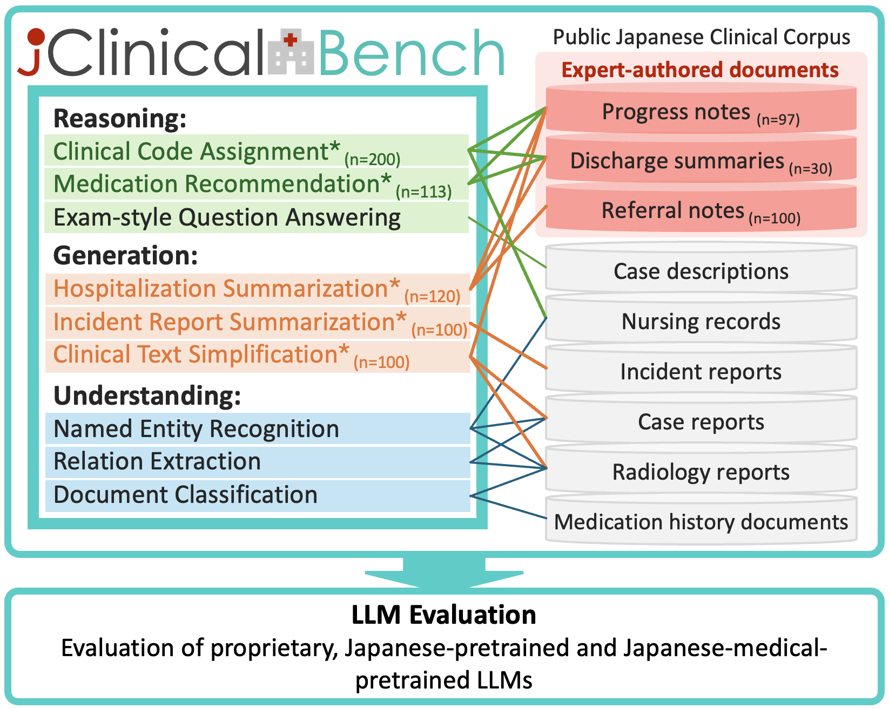
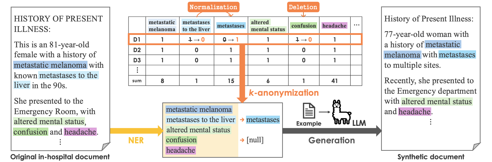
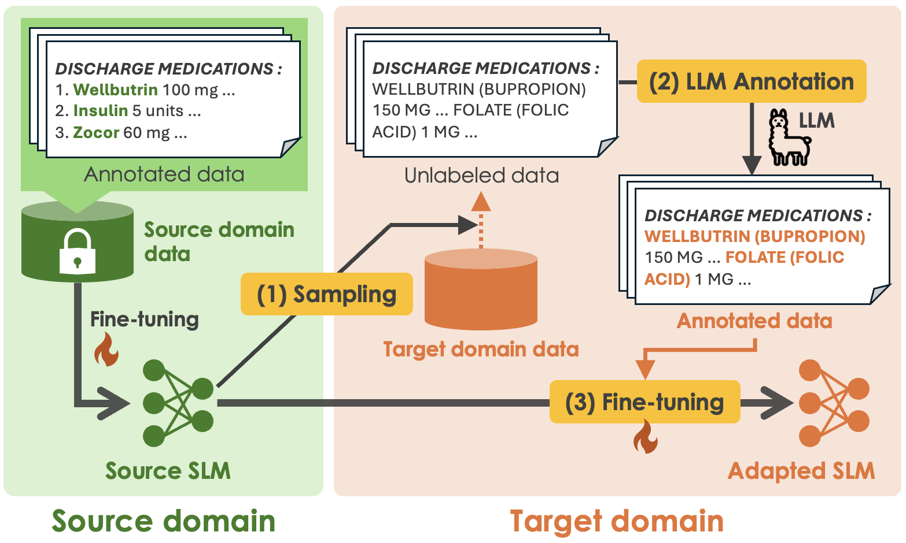

A Herd of Language Models Makes a Better Zero-shot Annotator for Clinical Named Entity Recognition
Findings of ACL 2026
I am a PhD student at the Nara Institute of Science and Technology (NAIST) in Japan, working on clinical natural language processing under the supervision of Prof. Eiji Aramaki at the Social Computing Lab. My research focuses on developing practical and reliable language technologies for real-world health care settings.
A central theme of my work is addressing data scarcity, domain shift, and data-sharing constraints in the clinical domain while protecting patient privacy. My research focuses on robustness under domain shift, particularly on how models trained on data from specific clinical institutions or general-domain data can generalize to new hospitals and previously unseen types of clinical documentation. In parallel, I work on privacy-preserving synthetic corpus generation, developing methods to make clinical NLP research more accessible without compromising patient privacy.
In addition to English, I conduct research on Japanese clinical texts, focusing on language resource construction. My work includes benchmark construction and evaluation for practical clinical tasks in Japanese (J-ClinicalBench), as well as annotation methodologies that reduce expert burden. Overall, I aim to make clinical NLP systems both deployable and trustworthy in practice.

Findings of ACL 2026

LREC 2026

Findings of ACL 2025

Findings of ACL 2025